<style>body{margin:0;background:#d6e0ea;font:14px Arial;display:grid;grid-template-columns:repeat(4,1fr);gap:8px;padding:8px}figure{margin:0;background:white;padding:8px;height:315px;box-sizing:border-box}img{width:100%;height:270px;object-fit:contain}figcaption{height:25px}</style><figure>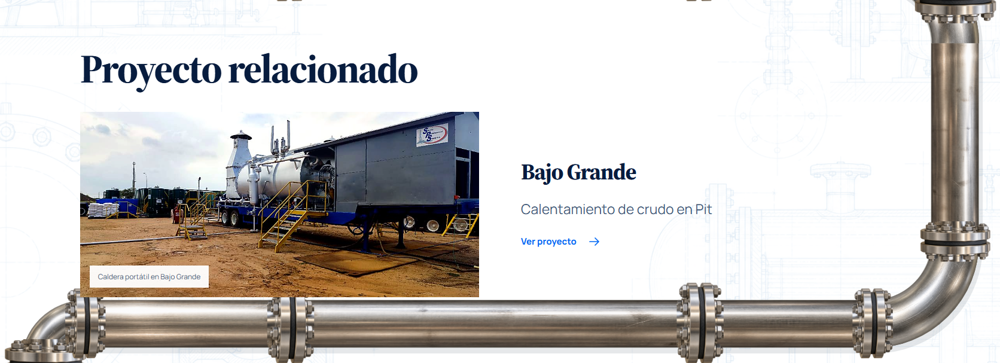<figcaption>servicio 6 · Proyecto relacionado</figcaption></figure><figure>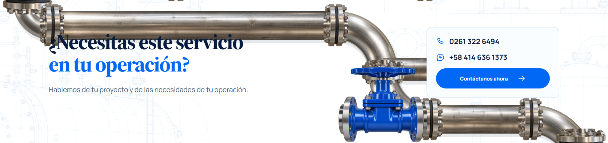<figcaption>servicio 7 · ¿Necesitas este servicioen tu operación?</figcaption></figure><figure>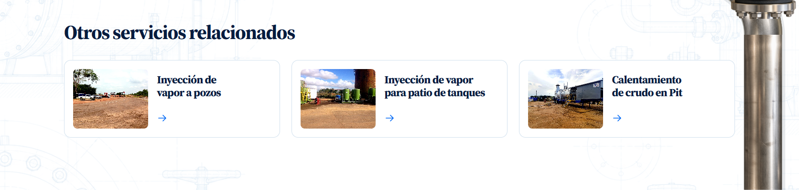<figcaption>servicio 8 · Otros servicios relacionados</figcaption></figure><figure>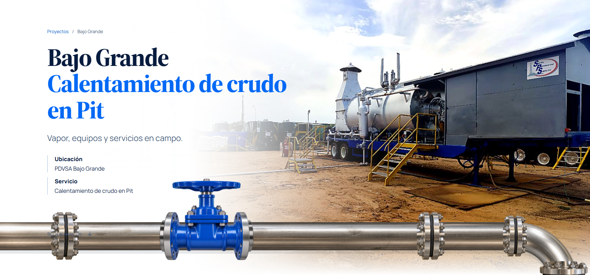<figcaption>proyecto 1 · Bajo GrandeCalentamiento de crudo en Pit</figcaption></figure><figure>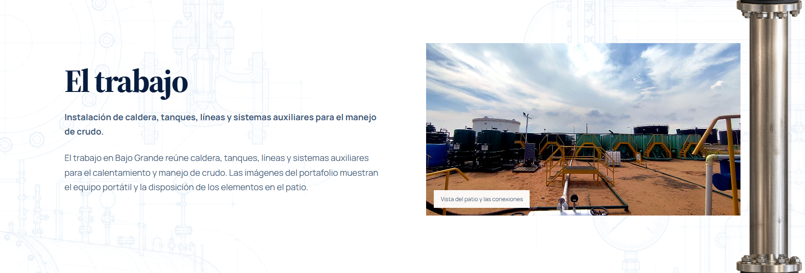<figcaption>proyecto 2 · El trabajo</figcaption></figure><figure>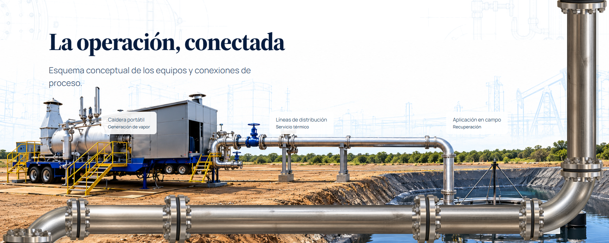<figcaption>proyecto 3 · La operación, conectada</figcaption></figure><figure>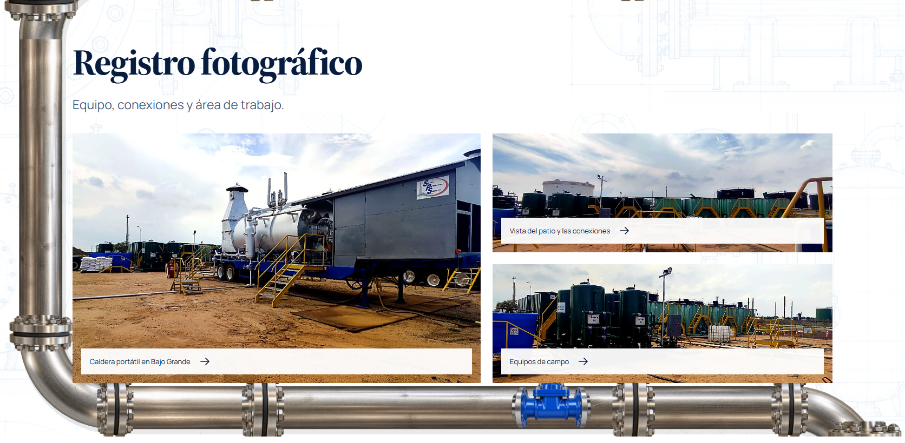<figcaption>proyecto 4 · Registro fotográfico</figcaption></figure><figure>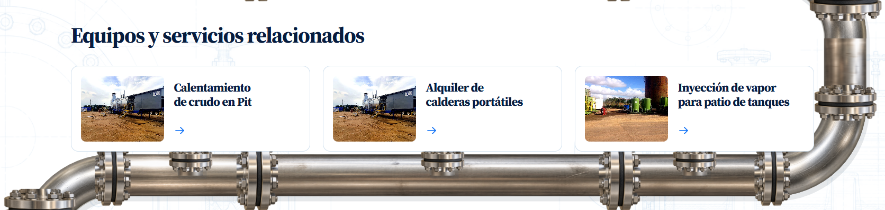<figcaption>proyecto 5 · Equipos y servicios relacionados</figcaption></figure><figure>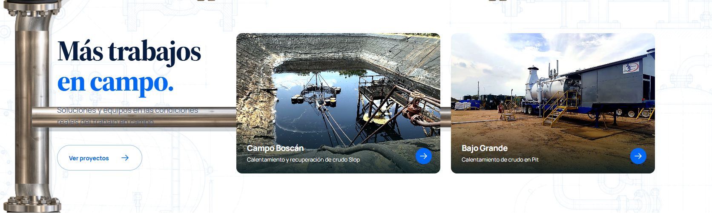<figcaption>proyecto 6 · Más trabajosen campo.</figcaption></figure><figure>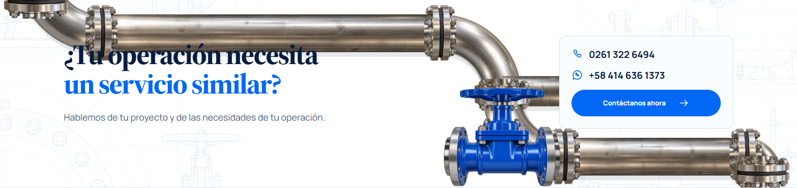<figcaption>proyecto 7 · ¿Tu operación necesitaun servicio simila</figcaption></figure><figure>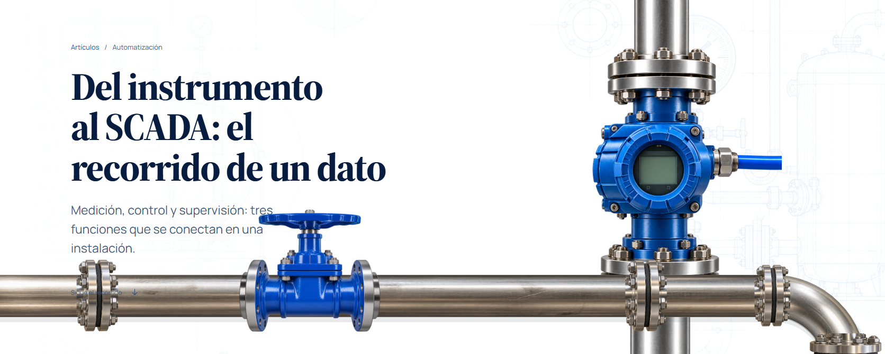<figcaption>articulo 1 · Del instrumento al SCADA: el recorrido d</figcaption></figure><figure>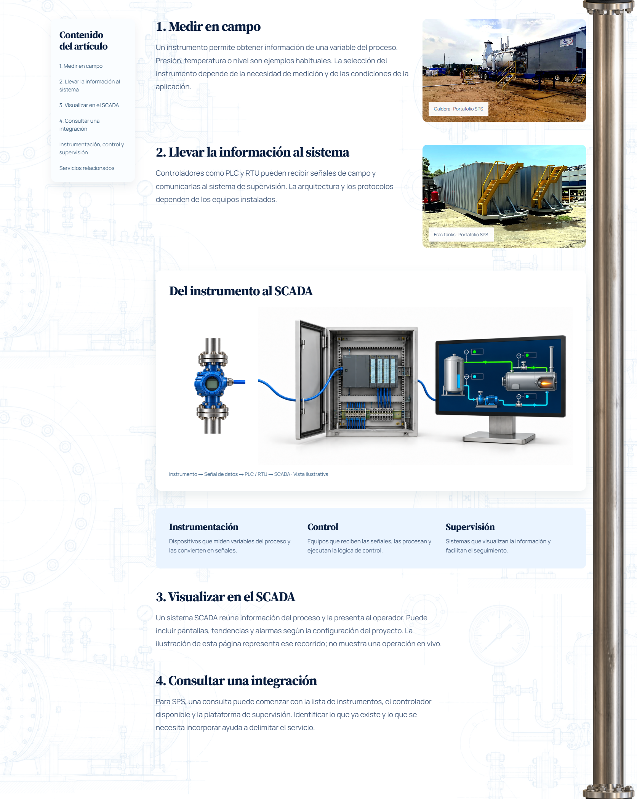<figcaption>articulo 2 · 1. Medir en campo</figcaption></figure>